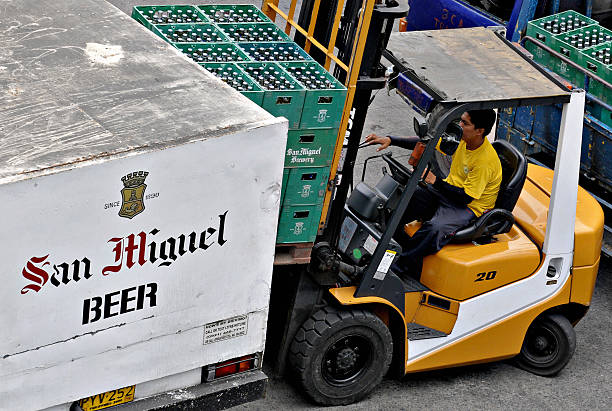
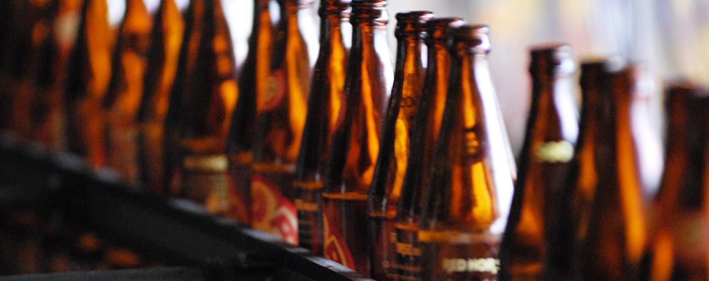
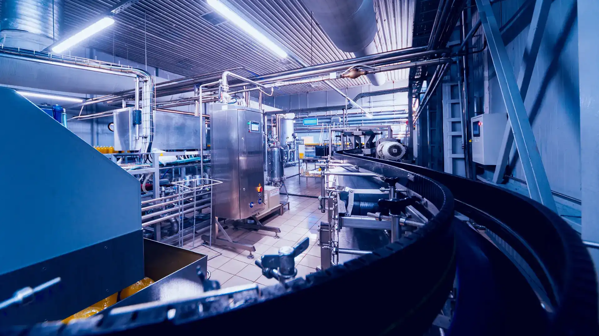
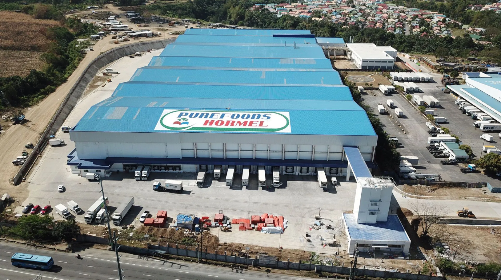

MANUFACTURING
Through its three business segments in food, beer, and beverages, San Miguel Food and Beverage, Inc. is a leading company in the food industry in the Philippines due to its array of leading brands in the food sector. The business ensures that every product meets international quality standards through the integration of modern manufacturing technology and environmentally friendly practices in its entire business operations. The organization has several sectors to offer daily services to millions of Filipinos while developing a strong supply chain system that connects local retail distribution centers and agricultural operations.
The Food Division is under the operations of San Miguel Foods for providing premium quality dairy products and processed meats and poultry through its state-of-the-art farm-to-fork system. This division is focused on two major objectives, which include the formulation of nutritional fortifications and ensuring food safety through FSSC 22000 and ISO certification standards. The business ensures an uninterrupted and consistent food supply chain that prioritizes the health and well-being of consumers by covering the entire production life cycle, which includes animal feeds and breeding.
Beverage divisions of San Miguel Brewery, Inc. and Ginebra San Miguel operate as extensions of the food business through the implementation of advanced brewing and distillation technologies, which are used to sustain the leadership of the company in the market. The divisions manufacture famous products like San Miguel Beer, which are recognized internationally through the implementation of traditional brewing processes in combination with advanced automated systems for bottling the beer. San Miguel Food and Beverage, Inc. continues to achieve its basic goal of “nourishing and nurturing lives” through the implementation of superior manufacturing processes in the market.